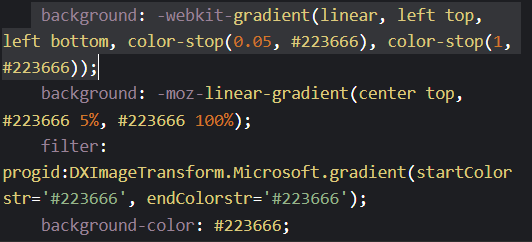
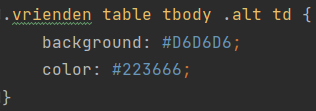

Opdracht 2
Zijn alle properties die de generator voorziet werkelijk nodig? Probeer dit uit.
Neen, wanneer ik de code van hieronder verwijder, veranderd er niets aan mijn lay-out. De rest van de code is wel nodig.

De generator gebruikt voor bepaalde properties een browser prefix. Zijn die voor jouw browser (nog steeds) nodig?
Voor mijn browser zijn deze niet nodig.De lay-out blijft ongewijzigd.
Opdracht 3
De generator voorziet de cellen in deze rijen van een andere achtergrondkleur, zoek op waar dit precies staat in de gegenereerde CSS.

specificiteit van de regels:
De gekleurde rijen werden al gespecificeerd door de class alt. Het td-element valt onder het tr-element.